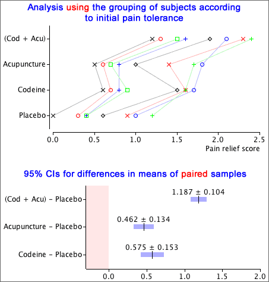

We start with a simple example in which one of the g treatments is a standard or 'baseline' treatment. The other (g − 1) treatments can be compared to it using standard confidence intervals for paired data. These confidence intervals are usually narrower than the corresponding confidence intervals that would be found for independent samples.
Example
In a randomised experiment about pain relief treatments in dental patients, 32 subjects were grouped into blocks of four according to an initial assessment of their tolerance to pain. One treatment was a placebo (dummy treatment) that the others could be compared to.
If the initial grouping of paitents into blocks is ignored, 95% confidence intervals for the improvement in pain relief over the placebo are wide. Taking account of the initial grouping, differences are far more accurately estimated.
